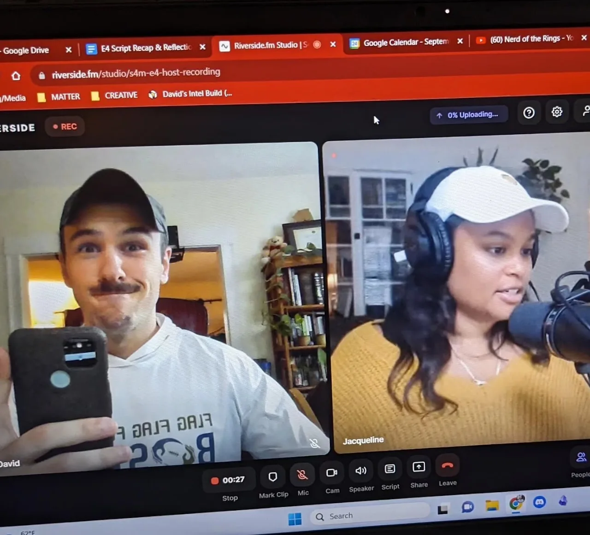
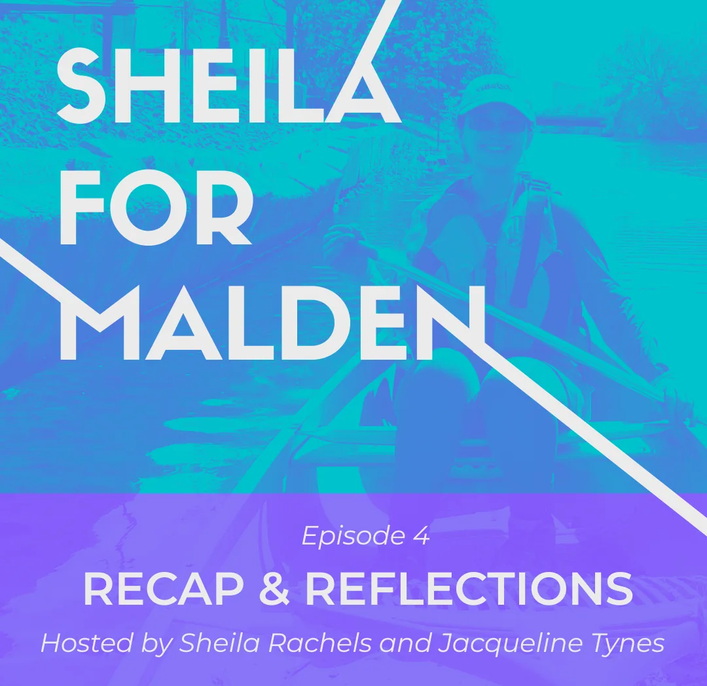
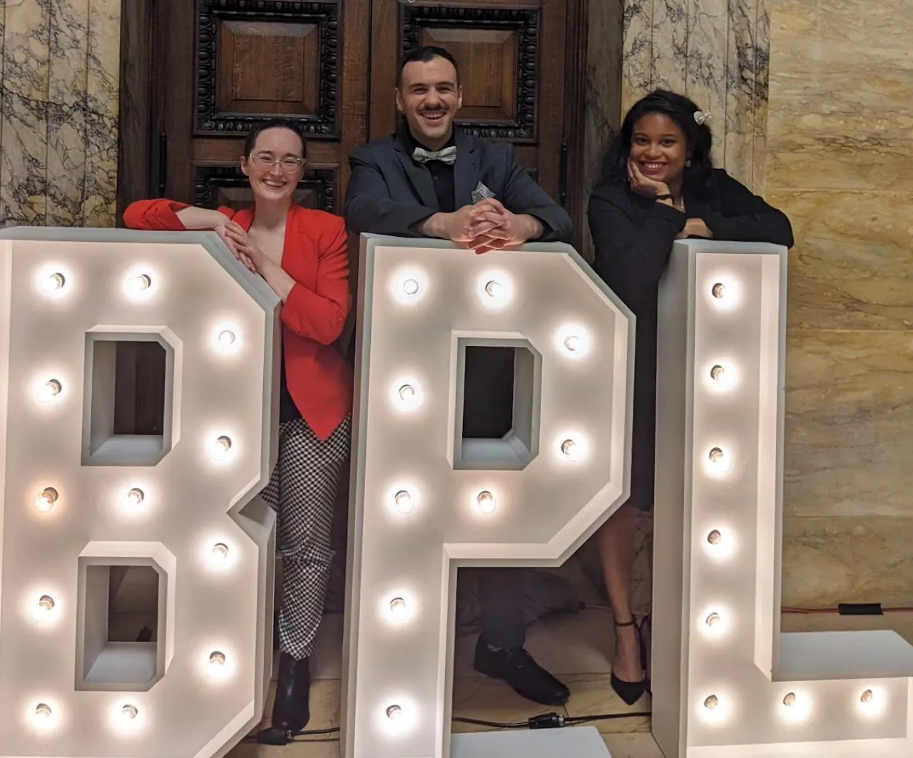

Context
On 10/14/2023 we published our fourth and final episode of the "Sheila for Malden" podcast series. It's been quite the ride these past six months!
Indeed, as I've gone along taking notes for each of the three installments after what I covered in the first half of this case study, I had every reason to wonder if two parts would be enough to digest everything that happened. Now that the dust has begun to settle, I think it's more important to see the forest for the trees and tackle a signature challenge faced in each of the remaining episodes. For E2 I'll examine the methodology behind our integration of guest interviews, which would become the norm. I'll focus on scheduling and equipment updates for E3 when I bought a new mic and our recording setup changed. And finally, I'll do a post-mortem on E4 with a detailed look at audience engagement over the course of the show and its impact overall.
I thanked Jacqueline and Sheila at length in part one, but they deserve another written round of applause here for sticking it out through the remaining hurdles we faced. It takes a great deal of determination (and perhaps a bit of craziness, too) to pull off something as involved as this on top of full time jobs and equally full lives.
E2: Growth & Grassroots
After the titillating trials of standing up the show, defining its scope, tuning its tone, adapting campaign branding, and, for our hosts, a crash course in all things podcast, we added another layer of complexity to the production for E2 and the remainder of the show: guest interviews. Early on in the show-drafting process, we identified a crop of potential speakers who'd be good fits for our topic distribution. Thanks to an unusually long production runway, we were able to book all of our first choices, but we had twice the number of options total just in case.
This ended up being an all-female production outside of me on the back end, and it was a joy to listen to the women in local politics and community initiatives out there getting sh*t done. From grassroots advocates to small-business owners to current and up-and-coming local politicians (and even our own candidate's mom), we were able to paint a complementary portrait of these perspectives to compare to Sheila's campaign experience.


Once we'd locked in an interview date with each guest, we set about formulating a preliminary questionnaire to be completed over email. This was a step I never had the luxury of taking in my other professional podcast projects. For those, there was basically one hour with a big wig C-suiter and we got what we got. By taking the extra week or two per person to tease out the answers to fundamental questions, it left much more time in the interview itself for an increased ability to focus on the form of the responses. And, since all but one of our guests were new to podcasts, it gave them a chance to shore up their talking points and feel confident in their preparation.
Above all, however, this extra phase per guest allowed us to spin their raw answers into very specific interview outlines rather than have to bend over backwards in the edit to recontextualize our chosen soundbytes. These outlines became the backbone of our interview process, guiding the course of the conversation through the salient details while baking in the pacing. Instead of putting the guest in the hot seat, we fed their original answers back through in a pre-paced manner that gave them very clear expectations of what information we needed to capture per question, all in their own words.
It wasn't just through comparison to prior experience that I could see the difference in quality this produced: we had an A-B test of sorts with our first interviewee in E2, Karen Buck, with whom we ended up needing to re-record due to technical issues. The first time around, we'd taken a much more straightforward approach and the resulting content was (mechanical problems aside) much harder to wrangle. When we reconnected for another go, we'd been able to reconstruct the interview outline doc--which we all could reference during the session--in such a way that we could draw out the desired information in a format/order that put everyone more at ease and without the need to pad answers with extra or overlapping detail.
It also freed up enough time to explore some additional questions that cropped up, even leading to the refined thesis for the episode: the differences between grassroots initiatives and the role of more structured groups in the local volunteer ecosystem. As we continued the series, this outline-first approach became standard practice.

E3: Engaged & Embedded
By the time we got to E3, we thought we'd fine tuned our process enough to take some of the pressure off, but fate had other plans. Not only had we opted to begin incorporating two guests per episode, which kept logistics churning, but we started encountering timing issues between all our schedules when our E3 guests needed to shift their recording dates. With episode release dates slated for the first Friday of the month, we found ourselves backed into the last possible dates for recording more than once. And as anyone working under the wire knows--most of the crunch bit down in the editing process.
The calendar kerfuffle was exacerbated by the fact that Jacqueline had just moved somewhere that didn't have a reliable internet connection or reproducibly recording-conducive environment. She needed to travel for our host recording sessions. Once here at my house, we'd not only record her host segments from the script, but also backtrack through the guest interview transcripts to re-record her lines from there under better conditions. This made for an acting challenge on her part and an extra dimension of preparation on mine.
On top of all that, we were experimenting with some new gear. Sheila had bought a USB pre-amp for her low-threshold mic so guests could hear her more clearly during our interviews, but it introduced additional line noise. Eventually we'd opt to re-record her interview content as well during the host sessions, making for a true chimera of a production. I'd just purchased a Shure SM7B mic, an extremely common sight in podcasts, but could only mix in 48 dB gain with my XLR to digital audio interface when the mic needed 60 dB. This lead to a clicking artifact and rise in the noise floor of the recordings that, while "washable" for the most part, definitely left the resulting clips stuffy and robbed of the dynamic range they came in with. Come to find out, after all was said and done, Shure sells an XLR to USB adapter with a built in pre-amp for exactly this purpose. This stings a bit in hindsight knowing there was some missed potential there, but you live and you learn!
E4: Recap & Reflections
Finally, we had E4, which featured another two guests. Production (minus the aforementioned gear trouble) was a breeze. The interviews were well-organized, the host recording session was the fastest of them all, and there was a really great emotional gravitas to the end of the series between a stump-speech monologue from Sheila and concluding well-wishes from all our guests, friends, and family. I'm particularly proud of my involvement in writing that speech, and I know Sheila was grateful for the assist.
Now, when it comes to the data, I won't sugarcoat it--the numbers are not impressive by magnitude. For a completely pro-bono project, with a hyper-specific subject matter, almost no marketing (certainly no paid marketing), and a target audience of about 800 Ward 2 voters total...none of us went into this thinking that we'd have created a new viral sensation.


To some degree, however, I believe that there's a common misconception around “the numbers” when it comes to podcasting. The conventions, and thus the benchmarks for success, are different from other forms of media in the same manner that long-form media expectations are different from short-form ones. There’s even more nuance to consider when you compare a limited series to a long-running one, which pits marketing against momentum.
Clients are often surprised (in the bad way) about metrics after their episodes air. The ROI for standing up an entire show, upon first glance, seems conspicuously missing. "Why didn't we get X number of downloads? Why are we only getting X shares? Where are the conversions?" It's not that there aren't often answers to these questions, or that podcasts aren't the right medium for generating these kinds of results, but they should be interpreted with a greater degree of context. Let me explain:
In this instance, Sheila (the client, of sorts) knew that she was only paying for this project with time; running a low-budget campaign was a central tenet of her candidacy. Aside from her neighborhood canvassing and a handful of fundraising events, this podcast was a cornerstone of her campaign communications. Like a newsletter or lawn sign, this was a resource for potential voters. Unlike those, however, which garner a few seconds of attention, our series provided 165 minutes of time where she didn't just "say" she was a worthy candidate, she proved she was, to quote our E3 title, "Engaged and Embedded." In this form, her commitment, expertise, and personality are unambiguous and inarguable.
Another part of this project's value came in the form of preparation. This was Sheila's first campaign, and she'd had no formal public speaking training, or other form of self-advocacy experience. By focusing on a podcast as part of her outreach initiatives, she not only brought in a dedicated team of communications advisors in the form of myself and Jacqueline (who also has a comms background), she gave herself the opportunities to hone her rhetoric. Sheila herself stated that the podcast gave her a chance to "work backwards from election day" in terms of timing, and helped her organize and articulate her points of view for other interviews, debates, and publications. She had about 30,000 words worth of transcripts to pull from and remix any time she needed copy. Indeed, the podcast and the accessibility of its public transcripts were lauded in a Malden News Network candidate spotlight.
With all that soft value in mind, let’s talk hard results. As of 11/26/2023, we have 51 downloads for E1, 37 for E2, 29 for E3, and 39 for E4. I’ll level with you–I wish the numbers were higher, but they proved insightful, as data often do. For a limited series, which likely won’t even be hosted very long after election day, what it comes down to is this: marketing is paramount. How do I know this is the reason and that the product wasn’t strictly to blame? We doubled our downloads for E4 in under two days once we made a concerted marketing push. Left to a newsletter link alone, it fizzled. After a handful of LinkedIn posts and specific outreach to our guests, it spiked.
We’d made a similar effort for E1. I made a trailer video that we shared around; I’d written a case study article explicitly about the road to that first episode; we had a networking short list of people we pestered to seed the series with ratings and reviews. Episodes 2 and 3 received no such special treatment, and in the end, that really hurt our momentum. Qualitatively, the feedback was good, the guests felt well-represented, and the core listenership stayed engaged throughout, but in that oh-so-clear hindsight, there were extra lengths we ought to have gone to to attract a larger audience.
Aside from simply sharing more doggedly on social media, we could have hosted premiere AMA sessions over Facebook, Zoom, or Twitter with our hosts or our guests (or both) to review and further explore our topics with listeners. I could have made audiograms (visually-oriented soundbyte snippets from the episode) for each guest/our hosts to share to tease the content. We could have set higher expectations of our guests to share their episode immediately upon release instead of at their leisure, and given them more pre-approved resources to do so. And, owing to Malden and Ward 2’s high concentration of Asian residents, we could have done more to make our show more accessible in other languages.
All told, I am proud of this series. We executed an extremely ambitious concept with no real resources besides time. We hit every deadline. We showcased unsung perspectives. We informed anyone listening. The project was everything we set out for it to be, and that is, unequivocally, success.

